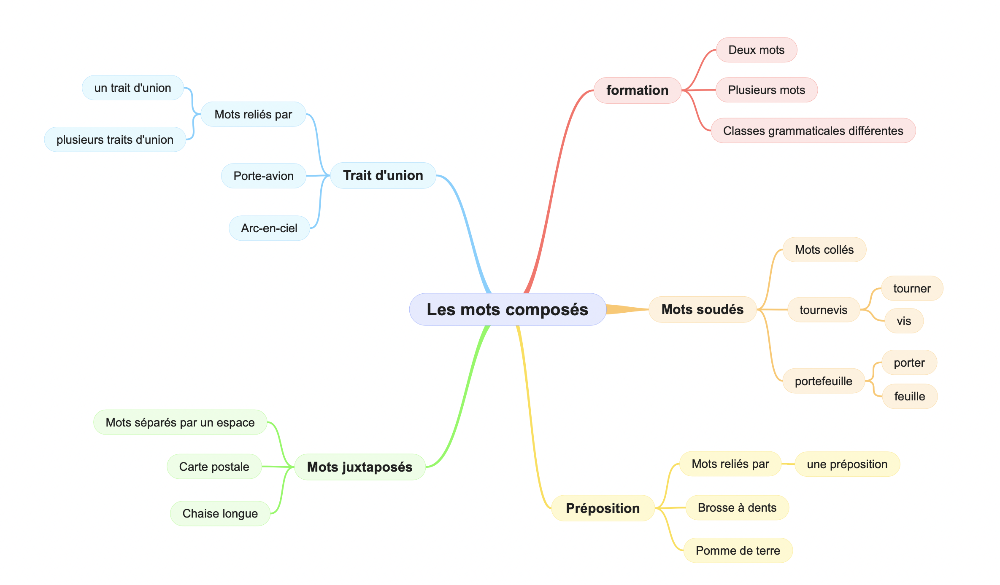

La Formation des Mots
À retenir
Les mots peuvent être simples (radical seul) ou construits (avec préfixes, suffixes, ou composition).
Pièges à éviter
Préfixe ≠ Suffixe
PRÉfixe = AVANT le radical (ne change pas la nature)
SUFfixe = APRÈS le radical (peut changer la nature)
❌ Ne pas dire "le suffixe in-" → in- est un préfixe !
Le préfixe ne change pas la nature
heureux (adjectif) → malheureux (toujours adjectif)
Le suffixe peut changer la nature :
solide (adj) → solidité (nom)
Mots composés ou dérivés ?
Dérivé = radical + préfixe/suffixe (ex: refaire)
Composé = deux mots entiers (ex: porte-feuille)
Attention au trait d'union
Certains mots composés ont un trait d'union :
- porte-avion ✅
- arc-en-ciel ✅
D'autres non :
- pomme de terre ❌ (espaces)
- portefeuille ❌ (soudé)
Cartes mentales
Formation des mots

Mots composés

La formation d'un mot